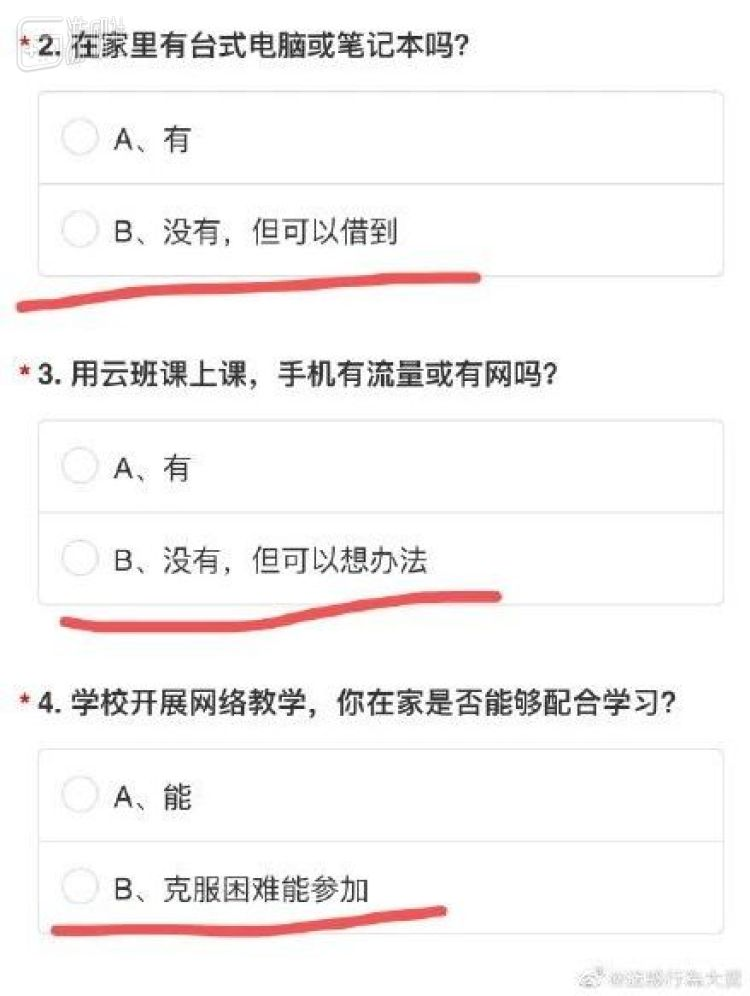
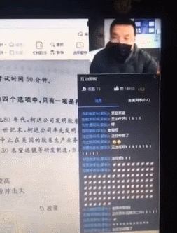
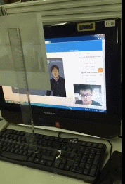
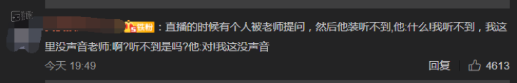
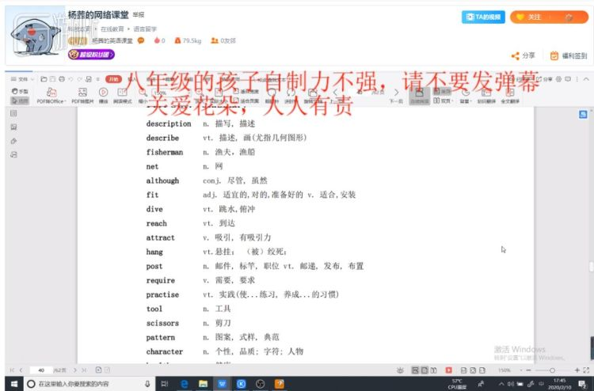
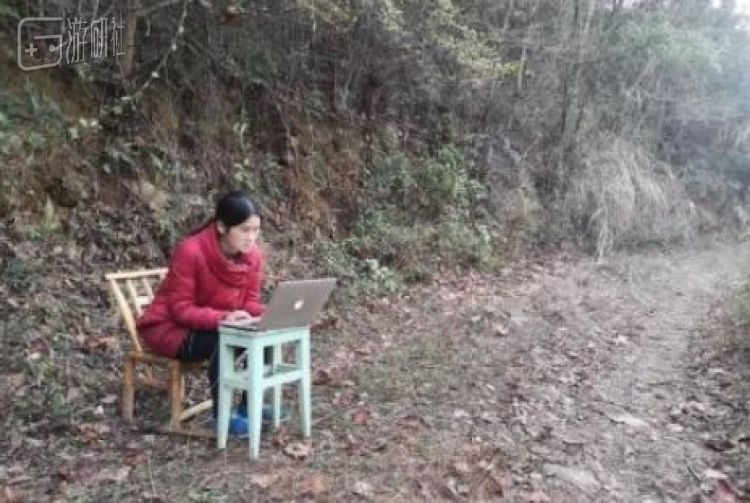

高三老师谈疫情下的高考备考：自律能力很差就会被“废”掉 - 经济观察网 － 专业财经新闻网站
原文链接 备份链接 经济观察网 记者 李静 实习记者 刘兰 受到疫情影响，近期多地学校采用“线上授课”的方式响应教育部疫情期间学校“停课不停学”行动。这一行动，牵扯众多，也包括正在复习冲刺阶段的高三备考生们。 疫情对于教学工作、班级管理影 …
疫情虽险，学习不止。希望当下“直播上课”的情景，只是未来成功学子们回忆中一个有趣的插曲。
“刚才那题答对的刷个666”，女老师在直播间里喊着，屏幕上也随之刷满了来自学生们的“666”。这是今天的直播平台里，一场普通英语课堂的景象。
截止目前，全国各地大部分学校正式启用直播上网课已经快一周了。在这个特殊的时期中，老师和学校为了让孩子们继续学习而绞尽脑汁，但学生们也开始想尽办法来调皮捣乱。
学校里的师生博弈，又开始在网络上上演。
1
就像疫情一定会过去一样，返校总有到来的一天。尽管目前老师学生们都无法重回学校上学，但借助如今的网络，曾经我们畅想的“在家上课”的未来就以这种方式实现了。
虽然大部分还沉浸在家里蹲的学生们都不情不愿，但大部分学校的意思还是很明显——该上还得上。

但好处在于，由于技术进步，已经有更多的平台允许师生间通过网络有更多的互动，例如签到、弹幕交流、连麦……而这也就意味着，学生们万众期待的“主播式教学”即将上演。
只不过，老师的心态是崩溃的。
风水总要轮流转。在学校，教师总是授人以渔的一方，但随着直播上课即将到来，一些对电子产品不那么熟悉的老教师就没了办法。这几日开始，视频网站上“直播上课”的教程也变得火热了起来。
不少老师并没有类似经验，且器材缺乏，临到关头也只能急中生智来完成直播：
好在这些都是不足为惧的小问题。所以我们如今也能看到这样一幅神奇的景象：老师在镜头前正经讲课，而同学们则在底下刷起了鼓励的小礼物。这其中即有学校专业教师的授课过程，也有普通人开展的网络补习班，但他们的目的都只有一个——教孩子们知识。而这幅热火朝天的学习氛围，也让最近的互联网显得其乐融融了起来。
只不过一旦直播开始，各种问题就开始让老师们忙晕了头。比如学生们爱起花里胡哨的网名，让点名的老师不知如何开口：
情急之下，有的老师连聊天机器人都不放过：
也有初出茅庐的网络教师不太清楚直播平台的规矩，导致出师未捷身先死。(这应该不是学校的老师)
而一点点小失误，也会让老师们一堂课废的口水付之东流——一位政治老师不小心开了静音，导致自己激情表演了几十分钟哑剧。
至于课堂上的回答问题环节，也就成了个大麻烦。在学校，面对面教学是常态——为了关注学生的学习情况，观察表情也是有必要的一步。而在网络教学的途中，老师们也能通过点名开学生摄像头的功能完成这件事。
只不过现在，由于大部分家长对于线上教学同样充满好奇，所以也就选择了在一旁跟读。这也导致老师们面对一个尴尬现象：点名让学生回答问题，结果一开摄像头，对面一家老小开始和自己大眼瞪小眼。
老师的视角大概是这样的：

而不少老师的情况也是同样“表里不一”：上半身正襟危坐给学生讲课，下半身睡裤拖鞋一应俱全。
课余时间也能搞点小动作：
当然，尽管网络教学给了老师们不用“全副武装”的权利，但也同时要面对一些不避免的小尴尬——平时可以管住孩子们不窃窃私语，但现在可不知道他们背地里在议论些啥。
最棘手的问题是，一部分粗心老师的“小秘密”也很快被观察敏锐的同学们发现。
而自己珍藏的关注列表，也说不好会惨遭暴露：
虽说看热闹不嫌事大的同学可不少，但大多数直播也都能安安稳稳的进行。当然，体育老师除外。
学校一向讲究德智体美全面发展，在疫情当头的情况下，身体素质更是要加紧锻炼。所以体育老师也得加入直播上课的大潮之中。而这也就让不少老师遭遇了“直播跑步跳操，惨遭围观”的羞耻情况。
示范动作也变成了一场对自尊心的考验：
即便平时是浪里白条的游泳教师，这回也免不了当岸上一条虫。
不过“惨遭围观”同样是双向的。体育老师们一声令下也可以尽享“万孩朝拜”的快感：
所以在这场网络教学图中，最受重创的也只有生物老师了。
惨点的物理老师可能也会被波及：
至于之前我们最期待的“给老师刷礼物”环节，今天在直播网站上倒也能看见不少。只不过很多老师都搞不懂礼物究竟是啥，说起来顶多也就是当个玩笑——大部分老师都能恪守职责，禁止学生刷礼物。
当然，不排除有开网络课堂的老师谢起礼物来格外上道：

综上所述，在克服种种困难的情况下，无数艰难的老师还是一如既往地给学生们讲完了一堂堂课，尽管并不容易。
当然，这期间学生的心态也是奔溃的。
2
自网课宣布开启之后，大部分学生都开始叫苦连天——尤其是他们看到自己被塞满的课程表之后：
特别是部分学生即使早已瘫软在家，但还是逃脱不了“视频打卡”的魔爪。
此前学生们对“网络上课”有着一副美好的幻想——以为可以随便开小差，或者边听课边干点别的。但高度发的直播科技如今已经把他们的幻想击碎：现在部分网课软件已经支持老师随时监控摄像头前的孩子或是电脑屏幕了。
而当代学生目前最恐惧的一句话，恐怕也从“你来黑板写下答案”变成了“老师邀请你上麦发言”。
为了应对这一挑战，学生们也开始急中生智了起来，比如有人选择用照片制作影分身。

也有前辈为后人总结出了宝贵的经验：装网络卡顿逃避点名。
不过脑子迟钝的还是难逃一劫。

在发现仍然逃脱不了上课之后，学生们又开始发挥自己的捣蛋天性，自娱自乐了起来。比如现在，“刷赞”俨然成为了当今扰乱课堂秩序最时髦的手段。很多老师抱怨：上课50分钟，结果拿了几万赞，也不知道学生是不是在听讲。
当然这类捣蛋的同学下场也都不太好。例如有人在网课上刷火箭，结果惨遭老师批评——B站上一位同学录屏给老师刷火箭，被老师发现后“赠送了45套题”。
而以往的“在课桌底下偷偷看手机”，也逐渐演变成了现在的“分屏”打游戏。
来源：B站@硬币是个好东东
但脑子不灵光的，该抓还是要被抓。
课堂转移到网络之后，大部分同学都发现上课该有的环节还是一个不落。拖堂吃不上午饭这种事，上网课也跑不了，但至少同学们能通过改名等小手段来抱怨一下。
像是“走错教室”这种问题，即使到了直播平台上也会发生：
除此之外，每天的作业倒也仍然不少。也不排除生气的老师留作业时“话里有话”：
还有的同学本想私聊小伙伴抱怨上课无聊，结果不小心发到公屏——像极了传小纸条被老师逮到。
就连上课偷偷嗦面被发现这种传统艺能也被完美复刻。
当然，最惨的还是这位：
当然，这些都是“大孩子”们的烦恼，有些年龄偏低的小朋友碰到网课更是不知所措。这位小朋友恐怕还在疑惑老师为啥要“叫妈妈”。
诸如此类的问题还有不少，此外老师的“拖堂”“留作业”倒是样样俱全，让同学们面对着手机电脑傻了眼。他们现在唯一能祈祷的，也只有老师掉线了。
3
网上课堂这一周走来，上述的这些“笑料”倒真是不少。当传统的课堂和直播并行，也让网上教学这一事件变得趣味横生了起来，并在这段艰难的日子里给大家添了些许难得的乐趣。但仍有一些事情，值得我们牢记与履行。
最近是“网络上课”这个话题大火的日子，不少网友也随之涌进了老师和学生们的小课堂，或多或少会有一些骚乱。而一些老师会在直播间挂上“关爱花朵”的标语，争吵也就逐渐减少了。

与此同时，也有不少明显不是学生的网友也跟着上起了课，刷起了回答。也有网友怀着对学生时代的怀念，想再次体验上课的感觉，便在近日圆了念想。这都是值得欣慰的景象，我们也在此呼吁大家，尽量不要给老师的教学添加更多的负担。这些克服条件限制，相隔遥远却仍然要给孩子们上一堂课的老师，值得我们尊敬。
江西的一位寥老师在700公里外的大山里，寒冷中，给同学们直播讲课：

贵州的邓老师上课时为了找信号，只能爬到山顶，戴上头灯。
类似的新闻仍然有不少。大部分老师的备课本已不易，但由于不熟悉电子产品，又给工作多添了一些麻烦。但师德不会被疫情掩埋，知识也能通过网络传递。
来自微博@河北教师考试
与此同时，也有学生跑到屋顶，连邻居的wifi，只为上一堂网课，实现自己的“浙大梦”。
疫情虽险，学习不止。希望如今“直播上课”的情景，只是未来成功学子们回忆中一个有趣的插曲。
原文链接 备份链接 经济观察网 记者 李静 实习记者 刘兰 受到疫情影响，近期多地学校采用“线上授课”的方式响应教育部疫情期间学校“停课不停学”行动。这一行动，牵扯众多，也包括正在复习冲刺阶段的高三备考生们。 疫情对于教学工作、班级管理影 …
原文链接 备份链接 经济观察网 记者 李静 “眼睛真的受不了”、“有娃的真累啊”，2月11日，一位学生家长提供给经济观察网的截图中显示，班级微信群里多位家长对于近期学校采用“线上授课”响应教育部疫情期间中小学生“停课不停学”的方式叫苦不 …
原文链接 备份链接 万人空巷，形容的是成千上万的人涌向某处，使得巷子里空阔冷落的情景。「全国各个省份的学生都凑在一起上直播课，大城市的有，下面县里村里的学生也有，街道上却空无一人。你想想，这是个什么场景。」 文 | 易方兴 编辑 | …
原文链接 备份链接 经济观察网 记者 万敏 准备好教案，调试好QQ，等待开课——林老师从来没想到，会以这样的方式，带领学生向着高考冲刺。 林老师是湖北省武汉市一所重点中学的高三年级任课老师、班主任。从1月30日（农历正月初六）开始，她和其 …
原文链接 备份链接 “ - 疫 情 之 下 - 她不会要求她的学生们将来必须成为医务工作者、科学家、警察、建筑工、老师，但她一定会要求自己的学生，好好学习，将来一定要用自己所学、所知、所拥有的知识和技能守护好那些曾经守护过他们的人。 ” …